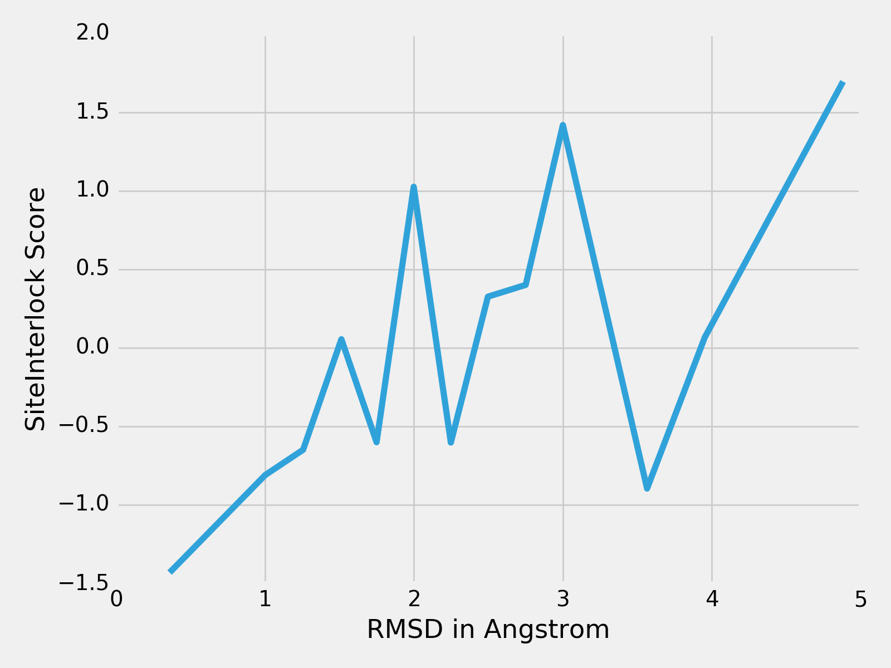

Test
python scripts/get-substructures.py \
--input examples/proflex_output/all-docking-poses-pdbs/ \
--output examples/proflex_output/all-docking-poses-pdbs-9A/ \
--ligand "<0>" \
--apply_to_dir
 |
|
~/Desktop/siteinterlock-toolkit$ python scripts/siteinterlock-score.py -i examples/proflex_output/all-docking-poses-pdbs-9A/
#
# SiteInterlock version 1.0.0
# Author: Sebastian Raschka
# Timestamp: 2016-08-17T14:37:12
#
# ==============================
# SiteInterlock Scoring Results
# ==============================
1com_0057_pflex_in_flex_0001.pdb,-1.393
1com_8_0676_pflex_in_flex_0001.pdb,-0.863
1com_0140_pflex_in_flex_0001.pdb,-0.776
1com_0058_pflex_in_flex_0001.pdb,-0.600
1com_crystal.pdb,-0.581
1com_4_0032_pflex_in_flex_0001.pdb,-0.562
1com_0119_pflex_in_flex_0001.pdb,-0.560
1com_5_0055_pflex_in_flex_0001.pdb,0.105
1com_1_0066_pflex_in_flex_0001.pdb,0.106
1com_3_0826_pflex_in_flex_0001.pdb,0.356
1com_3_0594_pflex_in_flex_0001.pdb,0.485
1com_0130_pflex_in_flex_0001.pdb,1.062
1com_2_0784_pflex_in_flex_0001.pdb,1.477
1com_8_0518_pflex_in_flex_0001.pdb,1.746
Optional
import pandas as pd
df1 = pd.read_csv('../../../examples/proflex_output/all-docking-poses-pdbs-9A.csv', comment='#')
df2 = pd.read_csv('../../../examples/1com_rmsds.csv')
df3 = df1.merge(right=df2, on='Filename')
df3.sort_values('RMSD', inplace=True)
df3
| Filename | SiteInterlock_Score | RMSD | |
|---|---|---|---|
| 0 | 1com_0057_pflex_in_flex_0001.pdb | -1.431 | 0.3592 |
| 2 | 1com_0140_pflex_in_flex_0001.pdb | -0.810 | 1.0010 |
| 3 | 1com_0058_pflex_in_flex_0001.pdb | -0.649 | 1.2555 |
| 6 | 1com_1_0066_pflex_in_flex_0001.pdb | 0.055 | 1.5126 |
| 5 | 1com_0119_pflex_in_flex_0001.pdb | -0.601 | 1.7488 |
| 10 | 1com_0130_pflex_in_flex_0001.pdb | 1.026 | 1.9982 |
| 4 | 1com_4_0032_pflex_in_flex_0001.pdb | -0.603 | 2.2476 |
| 8 | 1com_3_0826_pflex_in_flex_0001.pdb | 0.326 | 2.4965 |
| 9 | 1com_3_0594_pflex_in_flex_0001.pdb | 0.401 | 2.7501 |
| 11 | 1com_2_0784_pflex_in_flex_0001.pdb | 1.419 | 2.9999 |
| 1 | 1com_8_0676_pflex_in_flex_0001.pdb | -0.896 | 3.5653 |
| 7 | 1com_5_0055_pflex_in_flex_0001.pdb | 0.067 | 3.9528 |
| 12 | 1com_8_0518_pflex_in_flex_0001.pdb | 1.696 | 4.8813 |
import matplotlib.pyplot as plt
with plt.style.context('fivethirtyeight'):
plt.plot(df3['RMSD'].values, df3['SiteInterlock_Score'].values)
plt.xlabel('RMSD in Angstrom')
plt.ylabel('SiteInterlock Score')
plt.tight_layout()
plt.savefig('images/1com_scores.png', dpi=200)
